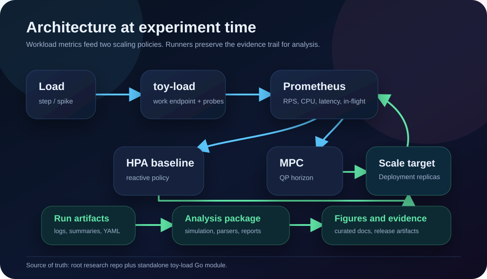
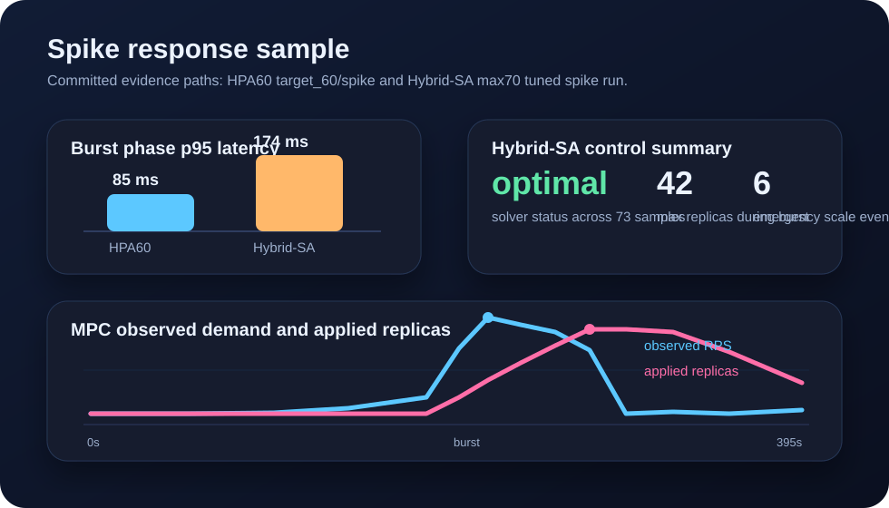

Architecture
Follow load profiles through toy-load, Prometheus metrics, HPA, MPC, and analysis artifacts.
A controllable Go workload, Helm deployment, live MPC controller, offline simulator, and evidence workflow for comparing predictive scaling against HPA baselines.
Follow load profiles through toy-load, Prometheus metrics, HPA, MPC, and analysis artifacts.
Start with local checks, then offline simulation, saved evidence summaries, or live cluster runs.
Browse dashboard previews, spike-response figures, release artifacts, and evidence roots.
Follow active work across benchmark automation, reproducibility, controller comparisons, and dashboard polish.
Figures are curated views into live runs, release automation, and reproducibility boundaries.

